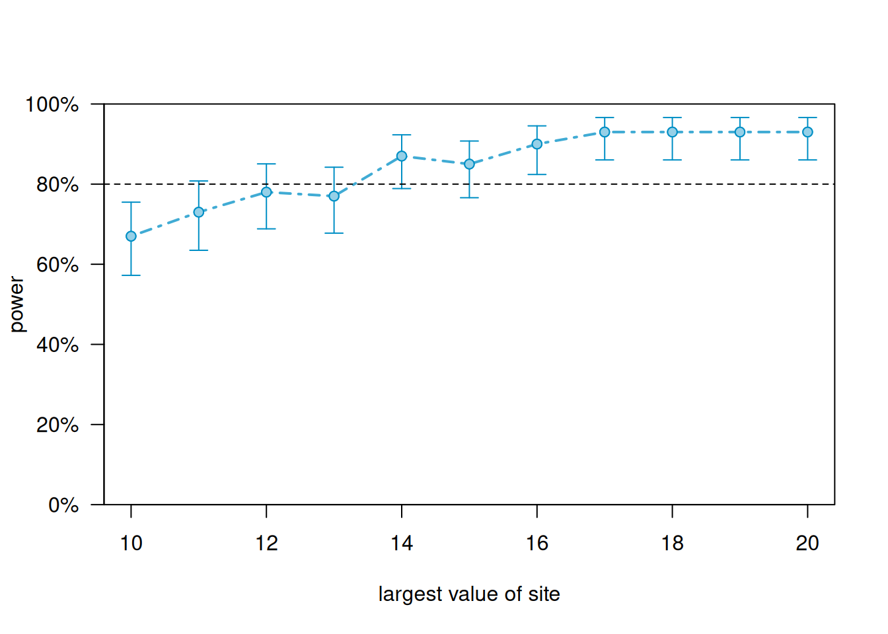

library(simr)
year <- 1:4
student <- 1:15
d <- expand.grid(year = year, student = student)
head(d, n = 8) year student
1 1 1
2 2 1
3 3 1
4 4 1
5 1 2
6 2 2
7 3 2
8 4 2In this model the slope coefficient represents a trend.
For power estimation based on sample size, we need the following:
We are planning an experiment where we track the BMI of college students over their four years at school. We’ll measure their BMI at the beginning of each school year in August. We would like sufficient power to detect a year trend of at least 0.25 if we recruit 15 students to the study. The null hypothesis we’ll test is that the year (slope) coefficient is 0. Rejecting this hypothesis provides evidence of a change in BMI over time. Assume the following:
We can use simulation to estimate the power of a hypothesis test on a specific coefficient in a model. This example uses the simr package (Green and MacLeod 2016).
First we create a data frame of 4 observations each of 15 students.
library(simr)
year <- 1:4
student <- 1:15
d <- expand.grid(year = year, student = student)
head(d, n = 8) year student
1 1 1
2 2 1
3 3 1
4 4 1
5 1 2
6 2 2
7 3 2
8 4 2Now define our between and within group variance. Note that the simr package requires the between group variance be expressed as variance and the within group variance be expressed as standard deviation.
between <- 3^2 # random intercept variance
within <- 1 # residual standard deviationNext define our effects. We need to provide intercept and slope coefficients. The slope coefficient is the effect we will test. The intercept can be interpreted as the average BMI for the students’ first year of college.
b <- c(20, 0.25) # fixed intercept and slopeNow define our model using the makeLmer() function. This function will simulate BMI values based on our hypothesized coefficients and variances.
m <- makeLmer(bmi ~ year + (1|student),
fixef = b,
VarCorr = between,
sigma = within,
data= d)
print(m)Linear mixed model fit by REML ['lmerMod']
Formula: bmi ~ year + (1 | student)
Data: d
REML criterion at convergence: 185.2989
Random effects:
Groups Name Std.Dev.
student (Intercept) 3
Residual 1
Number of obs: 60, groups: student, 15
Fixed Effects:
(Intercept) year
20.00 0.25 Finally use the powerSim() function to estimate the power of the test on the slope using 100 simulations. Setting progress = FALSE suppresses a progress bar which we don’t want to output in this online book. The seed argument makes the following result reproducible. The fixed() function dictates what coefficient we want to test. In this case we want to test the “year” coefficient using a “t” test.
# power of test on slope
powerSim(m,
test = fixed("year", "t"),
seed = 1,
nsim = 100,
alpha = 0.01,
progress = FALSE)Power for predictor 'year', (95% confidence interval):
37.00% (27.56, 47.24)
Test: t-test with Satterthwaite degrees of freedom (package lmerTest)
Effect size for year is 0.25
Based on 100 simulations, (0 warnings, 0 errors)
alpha = 0.01, nrow = 60
Time elapsed: 0 h 0 m 6 sOur power is estimated to be about 0.37. The confidence interval is based on a simple binomial test.
round(binom.test(x = 37, n = 100)$conf.int * 100, 2)[1] 27.56 47.24
attr(,"conf.level")
[1] 0.95This power is low. Let’s try increasing the sample size. We can do that with the extend() function. Below we increase the sample size to 30 and re-run the simulation.
m2 <- extend(m, along = "student", n = 30)
powerSim(m2,
test = fixed("year", "t"),
seed = 2,
nsim = 100,
alpha = 0.01,
progress = FALSE)Power for predictor 'year', (95% confidence interval):
64.00% (53.79, 73.36)
Test: t-test with Satterthwaite degrees of freedom (package lmerTest)
Effect size for year is 0.25
Based on 100 simulations, (0 warnings, 0 errors)
alpha = 0.01, nrow = 120
Time elapsed: 0 h 0 m 6 sPower is higher but still too low at 0.64.
We can generate a power curve with varying sample sizes using the powerCurve() function. First extend the data set by the maximum number of students we’re willing to entertain and then call the powerCurve() function. Below we specify a maximum of 40 students. Note this can take a while to run for large data sets and complex models. We have lowered the default number of simulations from 1000 to 100. The breaks argument says we want to try sample sizes ranging from 30 to 40 in steps of 2.
m3 <- extend(m, along = "student", n = 40)
pc <- powerCurve(m3,
test = fixed("year", "t"),
seed = 5,
along = "student",
breaks = seq(30,40,2),
nsim = 100,
alpha = 0.01,
progress = FALSE)
plot(pc)It appears we need about 38 students to achieve power of at least 0.80.
For power estimation based on sample size, we need the following:
In this model the slope coefficient represents a trend.
We are planning an experiment where we track the BMI of college students over their four years at school. We’ll measure their BMI at the beginning of each school year in August. We would like sufficient power to detect a year trend of at least 0.25 if we recruit 15 students to the study. The null hypothesis we’ll test is that the year (slope) coefficient is 0. Rejecting this hypothesis provides evidence of a change in BMI over time. Assume the following:
We can use simulation to estimate the power of a hypothesis test on a specific coefficient in a model. This example uses the simr package (Green and MacLeod 2016).
First we create a data frame of 4 observations each of 15 students.
year <- 1:4
student <- 1:15
d <- expand.grid(year = year, student = student)
head(d, n = 8) year student
1 1 1
2 2 1
3 3 1
4 4 1
5 1 2
6 2 2
7 3 2
8 4 2Now define our intercept and slope random effects. Note that the simr package requires this be entered as a matrix. We also need to enter the random effects as variances, so we square each entry.
re <- matrix(c(3^2, 0.5^2, 0.5^2, 0.2^2), 2)
rownames(re) <- colnames(re) <- c("intercept", "slope")
re intercept slope
intercept 9.00 0.25
slope 0.25 0.04Then we define the residual standard deviation.
resid_sd <- 1 # residual standard deviationNext define our effects. We need to provide intercept and slope coefficients. The slope coefficient is the effect we will test. The intercept can be interpreted as the average BMI for the students’ first year of college.
b <- c(20, 0.25) # fixed intercept and slopeNow define our model using the makeLmer() function. This function will simulate BMI values based on our hypothesized coefficients and variances.
m <- makeLmer(bmi ~ year + (year|student),
fixef = b,
VarCorr = re,
sigma = resid_sd,
data= d)
print(m)Linear mixed model fit by REML ['lmerMod']
Formula: bmi ~ year + (year | student)
Data: d
REML criterion at convergence: 232.0793
Random effects:
Groups Name Std.Dev. Corr
student (Intercept) 3.0
year 0.2 0.42
Residual 1.0
Number of obs: 60, groups: student, 15
Fixed Effects:
(Intercept) year
20.00 0.25 Finally use the powerSim() function to estimate the power of the test on the slope using 100 simulations. Setting progress = FALSE suppresses a progress bar which we don’t want to output in this online book. The seed argument makes the following result reproducible. The fixed() function dictates what coefficient we want to test. In this case we want to test the “year” coefficient using a “t” test.
# power of test on slope
powerSim(m,
test = fixed("year", "t"),
seed = 1,
nsim = 100,
alpha = 0.01,
progress = FALSE)Power for predictor 'year', (95% confidence interval):
19.00% (11.84, 28.07)
Test: t-test with Satterthwaite degrees of freedom (package lmerTest)
Effect size for year is 0.25
Based on 100 simulations, (1 warning, 0 errors)
alpha = 0.01, nrow = 60
Time elapsed: 0 h 0 m 7 sOur power is estimated to be about 0.19. The confidence interval is based on a simple binomial test.
round(binom.test(x = 19, n = 100)$conf.int * 100, 2)[1] 11.84 28.07
attr(,"conf.level")
[1] 0.95This power is low. Let’s try increasing the sample size. We can do that with the extend() function. Below we increase the sample size to 30 and re-run the simulation.
m2 <- extend(m, along = "student", n = 30)
powerSim(m2,
test = fixed("year", "t"),
seed = 2,
nsim = 100,
alpha = 0.01,
progress = FALSE)Power for predictor 'year', (95% confidence interval):
55.00% (44.73, 64.97)
Test: t-test with Satterthwaite degrees of freedom (package lmerTest)
Effect size for year is 0.25
Based on 100 simulations, (1 warning, 0 errors)
alpha = 0.01, nrow = 120
Time elapsed: 0 h 0 m 7 sPower is higher but still too low at 0.55.
We can generate a power curve with varying sample sizes using the powerCurve() function. First extend the data set by the maximum number of students we’re willing to entertain and then call the powerCurve() function. Below we specify a maximum of 50 students. Note this can take a while to run for large data sets and complex models. We have lowered the default number of simulations from 1000 to 100. The breaks argument says we want to try sample sizes ranging from 40 to 50 in steps of 2.
m3 <- extend(m, along = "student", n = 50)
pc <- powerCurve(m3,
test = fixed("year", "t"),
seed = 5,
along = "student",
breaks = seq(40,50,2),
nsim = 100,
alpha = 0.01,
progress = FALSE)
plot(pc)It appears we need about 44 students to achieve power of at least 0.80.
In this model the slope coefficient represents a population treatment effect. In other words, we’re comparing means between two groups.
For power estimation based on sample size, we need the following:
We are planning a multisite experiment where we will compare two types of bug traps, an older model (control) and a newer model (treatment). At each site we will place 5 traps of each type (10 total) and return in 30 days to count the number of invasive bugs captured. We think it would be meaningful if our new trap captured 3 additional bugs on average. We assume there is a between site standard deviation of 2 and a within site standard deviation of 6. How powerful is our experiment if we select 10 sites to run this experiment? Assume a two-sided test and a significance level of 0.05.
Crespi (2025) describes how to estimate power for a design such as this using a noncentral t distribution. The multisite.cont() function in the powertools package (Crespi and Liu (2025)) implements this formula.
Note the multisite.cont() function requires the total standard deviation of the outcome variable and the intraclass correlation coefficient (ICC) of the random intercept. We can derive both of these from the information given above.
The total standard deviation of the outcome is the square root of the sum of the between and within variances:
\[\sqrt{2^2 + 6^2} = \sqrt{40}\]
The ICC of the random intercept is the between group variance divided by total variance:
\[\text{ICC} = 4/40 = 0.1 \]
The ICC for random intercepts is provided to the function using the icc0 argument. The total standard deviation of the outcome is provided using the sd argument.
library(powertools)
multisite.cont(m = 10, # number of traps (5 in each condition)
J = 10, # number of sites
delta = 3, # treatment effect
sd = sqrt(40), # total sd of outcome
icc0 = 0.1, # icc of random effect
icc1 = 0, # icc of random slope (0 in this example)
alpha = 0.05, # significance level of test
power = NULL, # set to NULL since we want power
v = TRUE) # verbose, return more detail
Power for test of average treatment effect in multisite trials
m1, m2 = 5, 5
J = 10
delta = 3
sd = 6.324555
icc0, icc1 = 0.1, 0.0
alpha = 0.05
power = 0.6061384
sides = 2
NOTE: m1, m2 are the number of subjects within site in condition 1, condition 2
(total of m1 + m2 per site). m1, m2 OR m2, m1 produce equivalent results.The estimated power is about 0.61.
We can try multiple sample sizes using the sapply() function. We apply the multisite.cont() function to sample sizes ranging from 10 - 20. Notice that sample size in this case is the number of sites.
power <- sapply(10:20, function(x)multisite.cont(m = 10,
J = x,
delta = 3,
sd = sqrt(40),
icc0 = 0.1,
icc1 = 0,
alpha = 0.05,
power = NULL))
data.frame(sample_size = 10:20, power) sample_size power
1 10 0.6061384
2 11 0.6574890
3 12 0.7035244
4 13 0.7444653
5 14 0.7806200
6 15 0.8123479
7 16 0.8400344
8 17 0.8640709
9 18 0.8848413
10 19 0.9027126
11 20 0.9180288A sample size of 15 gets us to power over 0.80, and sample size of about 19 gets us to 0.90.
We can also estimate power using simulation via the simr package (Green and MacLeod (2016)).
Let’s restate the setup: we are planning a multisite experiment where we will compare two types of bug traps, an older model (control) and a newer model (treatment). At each site we will place 5 traps of each type (10 total) and return in 30 days to count the number of invasive bugs captured. We think it would be meaningful if our new trap captured 5 additional bugs on average. We assume there is a between site standard deviation of 5 and a within site standard deviation of 4. How powerful is our experiment if we select 10 sites to run this experiment? Assume a two-sided test and a significance level of 0.05.
First we create a data frame of 10 observations each at 5 sites. Then we add a sequence of five zeroes and five ones to indicate treatment. A zero means control and one means treated.
library(simr)
site <- 1:10
location <- 1:10
d <- expand.grid(location = location, site = site)
d$trap <- rep(c(rep(0, 5), rep(1, 5)), 10)
head(d, n = 12) location site trap
1 1 1 0
2 2 1 0
3 3 1 0
4 4 1 0
5 5 1 0
6 6 1 1
7 7 1 1
8 8 1 1
9 9 1 1
10 10 1 1
11 1 2 0
12 2 2 0Now define our between and within group variance. Note that the simr package requires the between group variance be expressed as variance and the within group variance be expressed as standard deviation.
between <- 2^2 # random intercept variance
within <- 6 # residual standard deviationNext define our effects. We need to provide intercept and slope coefficients. The slope coefficient is the effect we will test. The intercept can be interpreted as the average number of bugs captured in the control trap.
b <- c(0, 3) # fixed intercept and slopeNow define our model using the makeLmer() function. This function will simulate BMI values based on our hypothesized coefficients and variances.
m <- makeLmer(count ~ trap + (1|site),
fixef = b,
VarCorr = between,
sigma = within,
data = d)
print(m)Linear mixed model fit by REML ['lmerMod']
Formula: count ~ trap + (1 | site)
Data: d
REML criterion at convergence: 714.4632
Random effects:
Groups Name Std.Dev.
site (Intercept) 2
Residual 6
Number of obs: 100, groups: site, 10
Fixed Effects:
(Intercept) trap
0 3 Finally use the powerSim() function to estimate the power of the test on the slope using 100 simulations. Setting progress = FALSE suppresses a progress bar which we don’t want to output in this online book. The seed argument makes the following result reproducible. The fixed() function dictates what coefficient we want to test. In this case we want to test the “trap” coefficient using a “t” test.
# power of test on slope
powerSim(m,
test = fixed("trap", "t"),
seed = 10,
nsim = 100,
alpha = 0.05,
progress = FALSE)Power for predictor 'trap', (95% confidence interval):
65.00% (54.82, 74.27)
Test: t-test with Satterthwaite degrees of freedom (package lmerTest)
Effect size for trap is 3.0
Based on 100 simulations, (0 warnings, 0 errors)
alpha = 0.05, nrow = 100
Time elapsed: 0 h 0 m 5 sPower based on simulation is estimated to be about 0.65.
We can generate a power curve with varying sample sizes using the powerCurve() function. First extend the data set by the maximum number of sites we’re willing to entertain and then call the powerCurve() function. Below we specify a maximum of 20 sites. Note this can take a while to run for large data sets and complex models. We have lowered the default number of simulations from 1000 to 100. The breaks argument says we want to try sample sizes ranging from 10 to 20 in steps of 1.
m2 <- extend(m, along = "site", n = 20)
pc <- powerCurve(m2,
test = fixed("trap", "t"),
seed = 5,
along = "site",
breaks = 10:20,
nsim = 100,
alpha = 0.05,
progress = FALSE)
plot(pc)
According to simulation, we need about 14 sites to achieve power of at least 0.80.